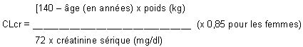

RÉSUMÉ DES CARACTÉRISTIQUES DU PRODUIT
ANSM - Mis à jour le : 25/03/2014
LEVOCETIRIZINE TEVA 5 mg, comprimé pelliculé
2. COMPOSITION QUALITATIVE ET QUANTITATIVE
Dichlorhydrate de lévocétirizine ............................................................................................................. 5 mg
Pour un comprimé pelliculé.
Excipient: lactose.
Pour la liste complète des excipients, voir rubrique 6.1.
Comprimé pelliculé.
Comprimés pelliculés ovales blanc à blanc cassé, gravé "LC5" sur une face; l'autre face étant lisse.
4.1. Indications thérapeutiques
Traitement symptomatique des rhinites allergiques perannuelles, des rhinites allergiques saisonnières et de l'urticaire chronique idiopathique.
4.2. Posologie et mode d'administration
Le comprimé pelliculé sera avalé avec une boisson sans être croqué.
Le traitement peut être pris au cours ou en-dehors des repas.
Adultes et adolescents:
La dose recommandée est de 5 mg une fois par jour (soit un comprimé par jour).
Enfants de 6 à 12 ans:
La dose quotidienne recommandée est de 5 mg une fois par jour (soit un comprimé par jour).
L'utilisation de Lévocétirizine Teva n'est pas recommandée chez les enfants de moins de 6 ans en raison de l'insuffisance des données d'innocuité et d'efficacité.
Sujets âgés:
Il n'existe actuellement pas de données suggérant la nécessité d'un ajustement de la posologie chez les sujets âgés dont la fonction rénale est normale.
Insuffisant rénal:
L'intervalle entre les prises doit être ajusté selon la fonction rénale selon la posologie indiquée dans le tableau ci-après.
Pour utiliser ce tableau, il est nécessaire de calculer la clairance de la créatinine (CLcr) du patient en ml/min. La CLcr (mL/min) peut être estimée à partir de la valeur de la créatinine sérique (mg/dL) selon la formule suivante:
Adaptations posologique chez l'insuffisant rénal:
|
Groupe |
Clairance de la créatinine (ml/min) |
Dose et fréquence d'administration |
|
Fonction rénale normale |
≥80 |
1 comprimé une fois par jour |
|
Insuffisance rénale légère |
50 - 79 |
1 comprimé une fois par jour |
|
Insuffisance rénale modérée |
30 - 49 |
1 comprimé une fois tous les 2 jours |
|
Insuffisance rénale sévère |
< 30 |
1 comprimé une fois tous les 3 jours |
|
Insuffisance rénale au stade terminal et Patients dialysés |
< 10 |
Contre-indiqué |
Insuffisant hépatique:
Aucun ajustement de la dose n'est nécessaire chez les patients atteints d'insuffisance hépatique isolée. Chez les patients atteints d'insuffisances hépatique et rénale associées, un ajustement de la dose est recommandé (voir Insuffisant rénal ci-dessus).
Durée de traitement:
La durée d'utilisation dépend du type d'affection, de la durée et de l'évolution des symptômes. Pour une rhinite allergique saisonnière, 3 à 6 semaines de traitement, voire 1 semaine en cas d'exposition pollinique brève, sont en général suffisantes. L'expérience clinique acquise est de 6 mois de traitement avec 1 comprimé à 5 mg de lévocétirizine par jour.
Hypersensibilité à la lévocétirizine, aux dérivés de la pipérazine ou à l'un des composants du produit.
Insuffisance rénale sévère avec une clairance de la créatinine inférieure à 10 mL/min.
4.4. Mises en garde spéciales et précautions d'emploi
Ne pas dépasser la dose recommandée.
L'utilisation du comprimé pelliculé de dichlorhydrate de lévocétirizine n'est pas recommandée chez les enfants de moins de 6 ans car il ne permet pas l'adaptation de la posologie.
La prudence est recommandée en cas d'ingestion d'alcool (voir la rubrique 4.5).
En raison de la présence de lactose, ce médicament ne doit pas être utilisé en cas de galactosémie congénitale, de syndrome de malabsorption du glucose et du galactose ou de déficit en lactase (maladies héréditaires).
4.5. Interactions avec d'autres médicaments et autres formes d'interactions
Aucune étude d'interaction n'a été menée avec la lévocétirizine (notamment aucune étude avec les inducteurs du CYP3A4). Les études réalisées avec la cétririzine (mélange racémique) n'ont révélé aucune interaction cliniquement significative avec la pseudoéphédrine, la cimétidine, le kétoconazole, l'érythromycine, l'azithromycine, le glipizide et le diazépam. Une légère diminution de la clairance de la cétirizine (16 %) a été observée avec la théophylline administrée en prises répétées (400 mg par jour en une prise), tandis que la biodisponibilité de la théophylline n'apparaît pas modifiée par l'administration concomitante de cétirizine.
Le taux d'absorption de la lévocétirizine n'est pas diminué par l'alimentation, bien que sa vitesse d'absorption soit réduite.
Chez certains patients sensibles, la prise concomitante d'alcool ou d'autres dépresseurs du système nerveux central avec la cétirizine ou la lévocétirizine pourrait avoir des effets sur le système nerveux central, bien qu'il n'ait pas été démontré de potentialisation des effets de l'alcool avec la cétirizine (racémate).
Des données sur un nombre limité de grossesses exposées n'ont pas révélé d'effets indésirables de la cétirizine sur la grossesse ou sur le développement du fœtus et du nouveau né. A ce jour, aucune autre donnée épidémiologique pertinente n'est disponible.
Aucune donnée clinique sur des grossesses exposées n'est disponible pour la lévocétirizine.
Les études menées chez l'animal n'ont pas révélé d'effet néfaste direct ou indirect sur la gestation, le développement embryonnaire et fœtal, la parturition ou le développement postnatal (voir rubrique 5.3).
La prudence est recommandée lors de la prescription chez la femme enceinte.
La lévocétirizine semble excrétée dans le lait maternel. Par conséquent l'utilisation de Lévocétirizine Teva n'est pas recommandée au cours de l'allaitement et ne doit être envisagée que si les bénéfices attendus pour la mère sont plus importants que le risque potentiel pour l'enfant.
4.7. Effets sur l'aptitude à conduire des véhicules et à utiliser des machines
Des études cliniques comparatives réalisées avec la cétirizine à la posologie recommandée n'ont pas mis en évidence d'altération de la vigilance, du temps de réaction, ou de la capacité à conduire des véhicules et à utiliser des machines.
Cependant somnolence, fatigue et asthénie ont été décrits chez certains patients traités par lévocétirizine. Par conséquent, les patients susceptibles de conduire un véhicule, ou de manipuler un outil ou une machine potentiellement dangereux, devront évaluer au préalable leur réponse au traitement.
La terminologie suivante a été utilisée pour classer les effets indésirables en fonction de leur fréquence d'apparition: très fréquent (≥ 1/10); fréquent (≥ 1/100 et < 1/10); peu fréquent (≥ 1/1 000 et < 1/100); rare (≥ 1/10 000 et < 1/1 000); très rare (<1/10,000); inconnu (fréquence ne pouvant être estimée à partir des données disponibles)
|
|
Très fréquent (≥ 1/10); |
Fréquent (≥ 1/100 et < 1/10); |
Peu fréquent (≥1/1 000 et < 1/100); |
Rare(≥1/10 000 et< 1/1 000); |
Très rare(≥1/10 000) |
Inconnu (ne peut pas être estimé à partir des données disponibles) |
|
Investigations |
|
|
|
|
Prise de poids, anomalie du bilan hépatique |
|
|
Affections cardiaques |
|
|
|
|
Palpitations |
|
|
Affections du système nerveux |
|
Somnolence, céphalées |
|
|
|
|
|
Troubles oculaires |
|
|
|
|
Troubles de la vision |
|
|
Troubles respiratoires, thoraciques et médiastinaux |
|
|
|
|
Dyspnée |
|
|
Affections gastro-intestinales |
|
Sécheresse de la bouche |
Douleur abdominale |
|
Nausées |
|
|
Affections de la peau et du tissu sous-cutané |
|
|
|
|
Œdème angioneurotique, prurit, éruption cutanée, urticaire |
|
|
Troubles généraux et anomalies au site d'administration |
|
Fatigue |
Asthénie |
|
|
|
|
Troubles du système immunitaire |
|
|
|
|
Hypersensibilité, incluant anaphylaxie |
|
|
Troubles hépatobiliaires |
|
|
|
|
Hépatite |
|
Symptômes
Les symptômes de surdosage peuvent inclure; chez l'adulte une somnolence et chez l'enfant un état d'agitation suivi d'une somnolence.
Conduite à tenir en cas de surdosage
Il n'existe pas d'antidote connu à la lévocétirizine.
En cas de surdosage, un traitement symptomatique sera entrepris sous surveillance en milieu spécialisé. Un lavage gastrique ne sera envisagé qu'en cas d'ingestion récente.
La lévocétirizine n'est pas éliminée par hémodialyse.
5. PROPRIETES PHARMACOLOGIQUES
5.1. Propriétés pharmacodynamiques
Classe pharmacothérapeutique: antihistaminique à usage systémique
Code ATC R06AE09.
La lévocétirizine, le R-énantiomère de la cétirizine, est un antagoniste puissant et sélectif des récepteurs périphériques H1.
Des études de liaison aux récepteurs ont révélé que la lévocétirizine a une forte affinité pour les récepteurs humains H1 (Ki = 3,2 nmoles/L). La lévocétirizine a une affinité 2 fois supérieure à celle de la cétirizine (Ki = 6,3 nmol/l). La demi-vie de dissociation de la lévocétirizine des récepteurs H1 est de 115 ± 38 min.
Les études de pharmacodynamie menées chez le volontaire sain ont montré une activité comparable entre la cétirizine et la lévocétirizine administrée à demi dose, tant au niveau de la peau que du nez.
Les études menées in vitro (chambres Boyden et technique sur culture cellulaire) montrent que la lévocétirizine inhibe la migration transendothéliale éotaxin-induite des éosinophiles à travers des cellules dermiques et bronchiques. Au cours d'une étude de pharmacodynamie expérimentale menée contre placébo in vivo chez 14 patients (technique de chambre cutanée) 3 effets inhibiteurs principaux ont été mis en évidence dans les premières 6 heures de la réaction induite par une exposition aux pollens: inhibition de la libération VCAM-1, modulation de la perméabilité vasculaire et diminution du recrutement des éosinophiles.
L'efficacité et la sécurité de la lévocétirizine ont été démontrées au cours de plusieurs études cliniques en double aveugle, contrôlées versus placebo, chez des patients présentant une rhinite allergique saisonnière ou de rhinite allergique perannuelle. L'expérience clinique acquise est de 6 mois de traitement avec 1 comprimé à 5 mg de lévocétirizine par jour.
Relation pharmacocinétique/pharmacodynamie:
5 mg de lévocétirizine génèrent un profil d'inhibition de l'éruption papulo-érythémateuse induite par l'histamine similaire à celui généré par 10 mg de cétirizine. Comme pour la cétirizine, l'effet sur les réactions cutanées provoquées par l'histamine n'est pas corrélé à l'évolution des concentrations plasmatiques.
Les ECG n'ont pas montré d'effets de la lévocétirizine sur l'intervalle QT.
5.2. Propriétés pharmacocinétiques
La pharmacocinétique de la lévocétirizine est linéaire, indépendante du temps et de la dose, avec une faible variabilité interindividuelle. Les profils pharmacocinétiques de l'énantiomère ou de la cétirizine sont identiques. Aucune conversion chirale n'intervient au cours des processus d'absorption et d'élimination.
Absorption
La lévocétirizine est rapidement et largement absorbée après l'administration orale. Chez l'adulte, les concentrations plasmatiques maximales sont atteintes 0,9 heure après la prise. L'état d'équilibre est atteint après 2 jours. Les concentrations plasmatiques maximales sont de 270 ng/ml et 308 ng/ml après administration, respectivement, d'une dose unique de 5 mg et de doses répétées de 5 mg une fois par jour. La biodisponibilité est indépendante de la dose et n'est pas modifiée par la prise alimentaire, cependant, elle peut entraîner une diminution et un retard du pic de concentrations.
Distribution
Aucune donnée n'est disponible chez l'homme concernant la diffusion tissulaire ou le passage de la barrière hémato-encéphalique. Chez le rat et le chien, les plus fortes concentrations tissulaires ont été retrouvées au niveau du foie et des reins, les plus faibles au niveau du système nerveux central.
Chez l'homme, la lévocétirizine est liée à 90 % aux protéines plasmatiques. La distribution de la lévocétirizine est restreinte, puisque son volume de distribution est de 0,4 L/kg.
Métabolisme
Chez l'homme, la fraction de lévocétirizine métabolisée est inférieure à 14 % de la dose absorbée. Par conséquent, les différences résultant d'un polymorphisme génétique ou de la prise concomitante d'inhibiteurs enzymatiques sont considérées comme négligeables. Les voies métaboliques comprennent l'oxydation aromatique, la N et O - déalkylation et la conjugaison taurine. Les voies de déalkylation impliquent en premier lieu le CYP 3A4, l'oxydation implique des isoformes multiples et/ou non identifiées des CYP. La lévocétirizine n'a pas d'effet sur l'activité des isoenzymes CYP 1A2, 2C9, 2C19, 2D6, 2E1 et 3A4 à des concentrations nettement supérieures à celles atteintes après l'administration orale d'une dose de 5 mg.
En raison de sa faible métabolisation et de l'absence de potentiel inhibiteur du métabolisme, l'interaction de la lévocétirizine avec d'autres substances, ou vice-versa, est peu probable.
Elimination
Chez l'adulte, la demi-vie plasmatique est de 7,9 ± 1,9 heures. La demi-vie est réduite chez le jeune enfant.
La clairance corporelle totale apparente moyenne chez l'adulte est de 0,63 ml/min/kg. La principale voie d'élimination de la lévocétirizine et de ses métabolites est urinaire, représentant en moyenne 85,4 % de la dose. L'élimination par voie fécale ne représente que 12,9 % de la dose. La lévocétirizine est excrétée à la fois par filtration glomérulaire et par sécrétion tubulaire active.
Insuffisance rénale
La clairance corporelle apparente de la lévocétirizine est corrélée à la clairance de la créatinine. Il est par conséquent recommandé d'ajuster la fréquence d'administration de la lévocétirizine en fonction de la clairance de la créatinine chez les patients atteints d'insuffisance rénale modérée à sévère. Chez les patients anuriques atteints d'insuffisance rénale au stade terminal, la clairance corporelle totale est réduite d'environ 80 % par rapport à celle d'un sujet normal. La quantité de lévocétirizine éliminée au cours d'une séance classique d'hémodialyse de 4 heures est inférieure à 10 %.
5.3. Données de sécurité préclinique
Les données précliniques issues des études conventionnelles de sécurité pharmacologique, de toxicité à doses répétées, de génotoxicité, du potentiel carcinogène, de toxicité sur la fonction de reproduction, n'ont pas révélé de risque potentiel particulier pour l'homme.
Les effets précliniques n'ont été observés qu'avec des taux d'expositions considérés comme offrant une marge de sécurité suffisamment importante pour ne pas les considérés comme significatif lors de l'utilisation en pratique clinique chez l'homme.
Noyau: Cellulose microcristalline, lactose monohydraté, silice colloïdale anhydre, stéarate de magnésium
Pelliculage: OPADRY Y-1-7000 H blanc (Hypromellose, dioxyde de titane (E171), macrogol 400)
Sans objet.
3 ans.
6.4. Précautions particulières de conservation
Pas de précautions particulières de conservation.
6.5. Nature et contenu de l'emballage extérieur
Plaquettes thermoformées OPA/Aluminium/PVC- Aluminium.
Boîtes de 7, 10, 14, 15, 20, 21, 28, 30, 40, 50, 60, 90 et 100 comprimés pelliculés.
Toutes les présentations peuvent ne pas être commercialisées.
6.6. Précautions particulières d’élimination et de manipulation
Tout produit non utilisé ou déchet doit être éliminé conformément à la réglementation en vigueur.
7. TITULAIRE DE L’AUTORISATION DE MISE SUR LE MARCHE
110, esplanade du general de gaulle
92931 paris la defense cedex
8. NUMERO(S) D’AUTORISATION DE MISE SUR LE MARCHE
· 392 750-7 ou 34009 392 750 7 9: 7 comprimés sous plaquettes thermoformées (OPA/Aluminium/PVC-Aluminium).
· 392 751-3 ou 34009 392 751 3 0: 10 comprimés sous plaquettes thermoformées (OPA/Aluminium/PVC-Aluminium).
· 392 753-6 ou 34009 392 753 6 9: 14 comprimés sous plaquettes thermoformées (OPA/Aluminium/PVC-Aluminium).
· 392 754-2 ou 34009 392 754 2 0: 15 comprimés sous plaquettes thermoformées (OPA/Aluminium/PVC-Aluminium).
· 392 755-9 ou 34009 392 755 9 8: 20 comprimés sous plaquettes thermoformées (OPA/Aluminium/PVC-Aluminium).
· 392 756-5 ou 34009 392 756 5 9: 21 comprimés sous plaquettes thermoformées (OPA/Aluminium/PVC-Aluminium).
· 392 757-1 ou 34009 392 757 1 0: 28 comprimés sous plaquettes thermoformées (OPA/Aluminium/PVC-Aluminium).
· 392 758-8 ou 34009 392 758 8 8: 30 comprimés sous plaquettes thermoformées (OPA/Aluminium/PVC-Aluminium).
· 574 777-8 ou 34009 574 777 8 3: 40 comprimés sous plaquettes thermoformées (OPA/Aluminium/PVC-Aluminium).
· 574 778-4 ou 34009 574 778 4 4: 50 comprimés sous plaquettes thermoformées (OPA/Aluminium/PVC-Aluminium).
· 574 779-0 ou 34009 574 779 0 5: 60 comprimés sous plaquettes thermoformées (OPA/Aluminium/PVC-Aluminium).
· 574 780-9 ou 34009 574 780 9 4: 90 comprimés sous plaquettes thermoformées (OPA/Aluminium/PVC-Aluminium).
· 574 781-5 ou 34009 574 781 5 5: 100 comprimés sous plaquettes thermoformées (OPA/Aluminium/PVC-Aluminium).
9. DATE DE PREMIERE AUTORISATION/DE RENOUVELLEMENT DE L’AUTORISATION
[à compléter par le titulaire]
10. DATE DE MISE A JOUR DU TEXTE
[à compléter par le titulaire]
Sans objet.
12. INSTRUCTIONS POUR LA PREPARATION DES RADIOPHARMACEUTIQUES
Sans objet.
Liste II.